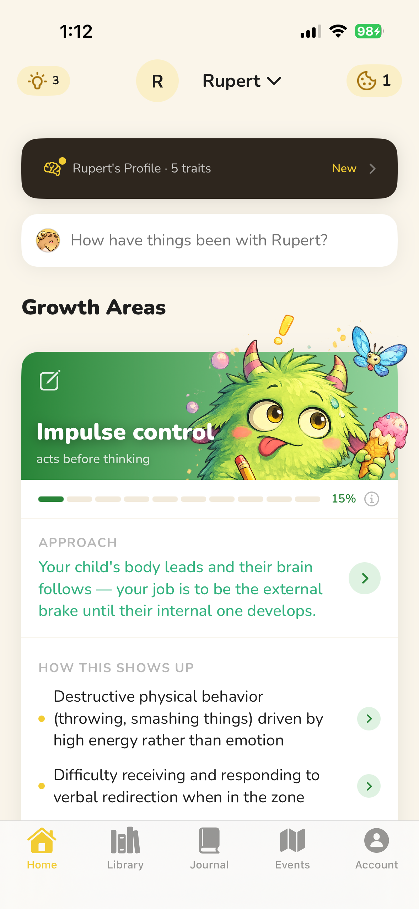
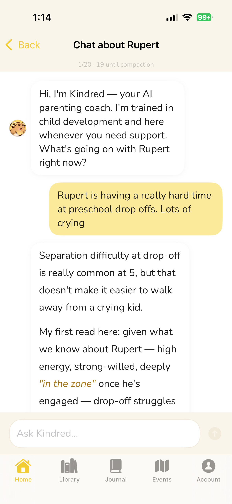

Meet your 24/7
parenting coach.
Kindred learns your child's specific challenges, personality, and history — so you always know how to respond with calm and confidence.

Free to download · iOS
Kindred learns your child's specific challenges, personality, and history — so you always know how to respond with calm and confidence.
Free to download · iOS
From tracking your child's growth areas to getting instant guidance in a hard moment — Kindred keeps everything in one place.

Track your child's progress

Get guidance in the moment
Kindred builds a picture of your child over time — their wiring, their triggers, their patterns — so nothing feels like a mystery.
Whether it's a meltdown at pickup or a rough bedtime, you'll always have a thoughtful response ready — not just a reaction.
The strategies Kindred gives you aren't just for today. They're grounded in how children develop — building real skills that last.
Most parenting content is written for an average child in an average situation. Yours isn't average — and the advice often doesn't fit.
When a child melts down, acts out, or shuts down — they're not being difficult. They're telling you something. Kindred helps you hear it.
Between school, work, and just living — there's no time to read a parenting library. You need answers for this moment, not a reading list.
The more you use Kindred, the more it understands — building a picture of your child that shapes every piece of guidance it gives.
Tell Kindred what challenges you're seeing — tantrums, anxiety, defiance, sleep struggles. It helps you understand what's really going on underneath.
Kindred builds a tailored approach for your child — grounded in child development science, specific to their age, temperament, and patterns.
Had a hard moment? Not sure how to handle something? Your AI coach knows your child's history and is ready when you need to think things through.
A coach that knows your child's history, growth areas, and what you've already tried. Not a generic chatbot — a real thinking partner for the hard moments.
Track the specific challenges your child is working through. Kindred maps the patterns, measures progress, and adjusts strategies as your child grows.
Capture observations, moments, and breakthroughs. Your notes feed into Kindred's understanding — and become a record you'll actually want to look back on.
Share access with your partner so you're both working from the same understanding. Same strategies, same language, same approach — even on different days.
Two fresh cards, delivered daily. Not generic parenting tips — child psychology insights specific to your child's challenges. The kind of thing that makes you think "I never knew that."
Entitlement usually comes from frustration intolerance, not being spoiled — Liam needs small frustrations to land, not be rescued from them.
Reassurance feels helpful but often backfires — each "it'll be fine" teaches Mia her worry signal can't be trusted.
Boredom is the precursor to creativity. Sit with it.
Every strategy Kindred suggests is grounded in peer-reviewed child development research — not well-meaning opinions.
Kindred is built on the principle that children's behavior always makes sense — once you understand what's driving it.
Kindred tracks your child's growth over time — so you can see what's shifting, even when the day-to-day feels hard.
Understanding why a child behaves the way they do doesn't excuse the behavior — it's the only thing that actually changes it.The Kindred approach to parenting
Free to download. 24/7 support tailored to your child.